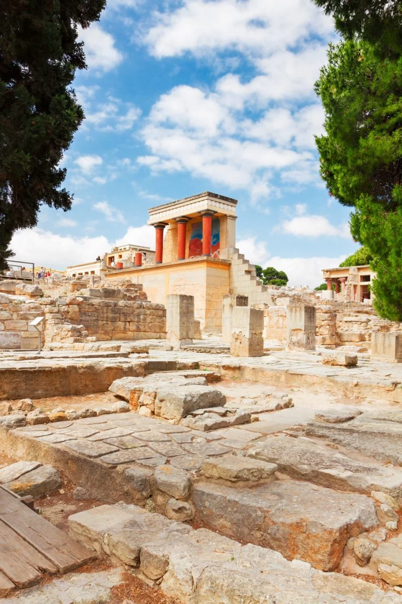
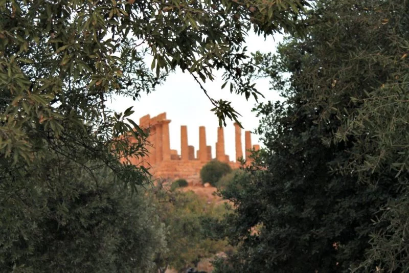
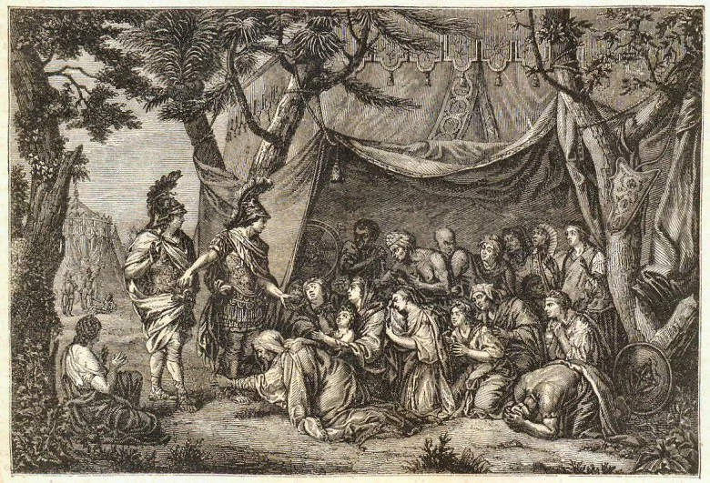
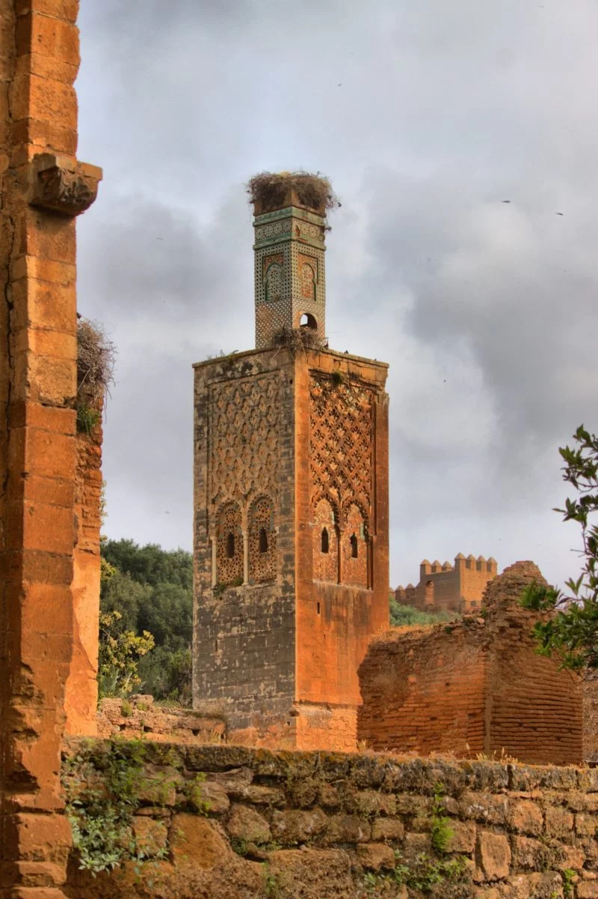
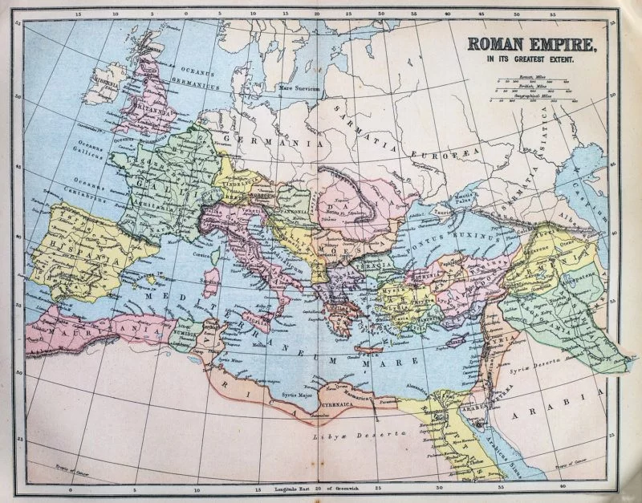
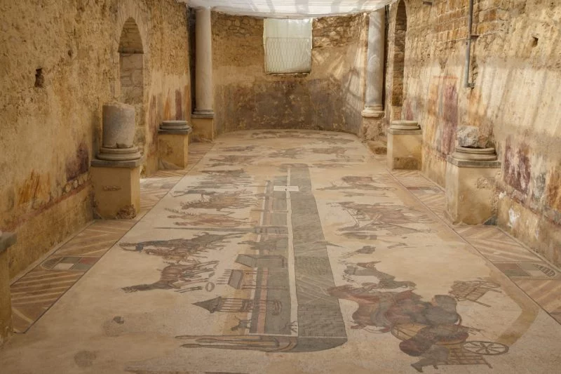
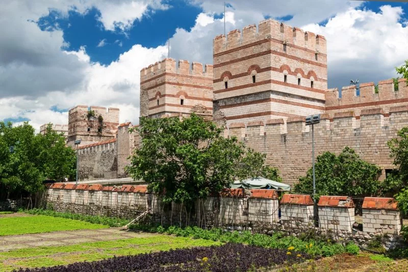
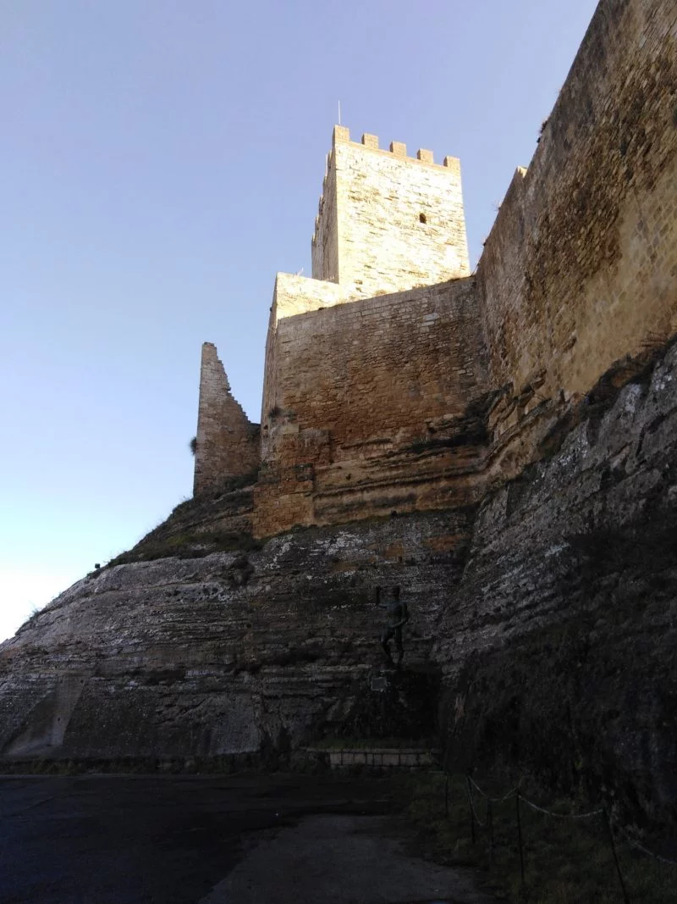
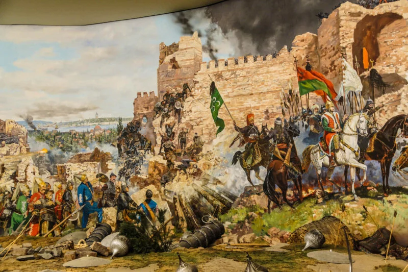

La grande traversée des civilisations qui ont façonné la Méditerranée
La Méditerranée est l'une des plus importantes régions de l'Histoire de l'Humanité, qui a vu naître et
vivre
les plus grandes civilisations : Egyptiens, Phéniciens, Romains, Grecs, Ottomans, Normands, Vénitiens,
Arabes, Ibères, Génois, Carthaginois... Depuis l'Antiquité, elles ont façonné l'histoire du bassin
méditerranéen et par la même occasion notre héritage culturel.
Suivez-moi dans un voyage de plus de 8000 ans à travers l'histoire de la Grande Bleue, en compagnie des
peuples les plus conquérants...
Sommaire
Les grands "débuts" de la Méditerranée dans l'Antiquité

L'Antiquité reste à ce jour le point de départ de la grande histoire du bassin méditerranéen, tant de
grandes civilisations s'y sont succédées. Et non des moindres... Puisque dès le 4e siècle avant JC, les
Egyptiens et le règne des pharaons ont laissé leurs traces le long de la Vallée du Nil. Pour la plupart
des historiens, il s'agit là de la toute première civilisation qui a réellement participé au
développement de l'histoire et de la culture méditerranéenne.
Mais en histoire, tout n'est pas linéaire ; les grandes civilisations méditerranéennes ont ainsi tantôt
succédé aux autres, tantôt coexisté. C'est ainsi le cas de la civilisation minoenne qui a participé
activement au développement culturel, économique, agricole et commercial de toute la zone.
Tirant son nom du roi légendaire Minos, la civilisation minoenne a connu une phase de prospérité entre 2
700 et 1 200 avant JC. Cette civilisation antique doit son existence et son expansion a sa capacité à
construire des navires pour commercer et occuper plusieurs îles méditerranéennes, en l'occurrence la
Crète mais aussi Santorin dans l'actuelle Grèce.
Le commerce et l'échange de marchandises ont été deux axes centraux dans le développement des plus
grandes civilisations de Méditerranée. La mer Egée a ainsi été un théâtre impressionnant de va-et-vient
de denrées de toutes sortes qui a permis à plusieurs civilisations dites "cycladiques" de prospérer à
leur tour, entre 1450 avant notre ère et 1 100 av J.C..
Ce fut le cas pour les Archéens et les Doriens, deux grandes civilisations de la mer Egée. Les Ioniens
comptent également parmi les peuples ayant laissé une forte empreinte dans l'histoire du bassin
méditerranéen, un millénaire environ avant notre ère.
Suite à cette domination commerciale et historique des peuples issus de la région des Cyclades, la
Méditerranée a connu une nouvelle étape dans son histoire sous l'influence des Crétois. Là encore, c'est
l'activité du commerce qui participe majoritairement à l'expansion des Crétois qui parviennent à
repousser les limites techniques de la navigation sur la Méditerranée. Ce sont eux qui ont pour la
première fois réussi à partir en mer des mois durant, faisant escale pour vendre leurs poteries et
diverses denrées.
Les Grecs, une civilisation de premier plan en Méditerranée
Le foisonnement des civilisations en Méditerranée est marqué par l'une des plus importantes de
l'histoire
du bassin : la civilisation grecque. Si certains historiens marquent le point de départ de la période de
la Grèce antique - ou Grèce classique - lors des premiers Jeux Olympiques en 776 avant JC, la majorité
d'entre eux le situe plutôt vers 1 100 avant JC.
Les Grecs ont incontestablement apposé leur sceau dans la région, repoussant les limites géographiques
de leur empire en faisant la conquête des bords de la mer Noire jusqu'au sud de la zone méditerranéenne,
aux abords de la mer Rouge. La Grèce Antique est en réalité constituée de plusieurs peuples, comme les
Achéens, les Ioniens, les Doriens ou les Eoliens.
Si cette période démarrant 1000 ans avant notre ère reste à ce jour le point de départ historique du
développement de la Grèce Antique dans le bassin méditerranéen, l'époque la plus faste et la plus
notable est celle de l'époque dite "classique".
C'est au début du 5e siècle avant J.C. que les Grecs, réunis autour du pouvoir politique d'Athènes,
parviennent à maintenir leur influence dans la région, repoussant notamment les tentatives d'invasions
des Perses. Le 5e de même que le 6e siècle avant notre ère figurent parmi les deux périodes les plus
importantes pour l'humanité car c'est au cours de cette période que la première démocratie de l'Histoire
a été créée, en Grèce.

L'époque "classique" est le véritable âge d'or de la Grèce dans l'histoire de la Méditerranée. Le
pouvoir politique, centralisé autour d'Athènes, fédère le peuple grec et étend son hégémonie sur toute
la mer Egée. On parle alors de thalassocratie, soit un système politique fondé sur la domination par la
mer.
Mais c'est bien la démocratie qui restera incontestablement le legs le plus important que la Grèce a
concédé à nos civilisations actuelles. Si l'organisation politique est un élément central dans la
culture grecque, l'artistique et le philosophique le sont également. Le 4e et 3e siècle av J.C. sont
ainsi deux périodes des plus brillantes sur le plan intellectuel, dominées par les célèbres philosophes
Platon et Aristote entre autres.
Le déclin de la Grèce Antique intervient progressivement suite à la défaite de la guerre du Péloponnèse
contre Sparte, au cours des années 431 à 404 av JC. Les cités grecques se trouvent affaiblies.
Le règne de Philippe II (359-356 av JC) est celui durant lequel ce roi entreprend avec succès d'étendre
le Royaume de Macédoine sur toute la Grèce continentale. Les importantes réformes politiques et
militaires qu'il a mises en place lui ont permis d'assoir la domination de la Macédoine - un état dans
l'état - sur de grandes cités telles qu'Athènes et Thèbes. Fort de cette influence, Philippe II engage
ses armées dans une ambitieuse expédition militaire contre les Perses.
Mort assassiné en 336, Philippe II est le père d'Alexandre le Grand qui reprend les rênes du royaume et
poursuit la conquête militaire initiée par son père. Au cours de la période allant de 336 à 323 av JC,
Alexandre le Grand parvient à dominer les Perses et à étendre le royaume Grec jusqu'en Asie.

Suite à la mort d'Alexandre le Grand en 323 av J.C., l'hégémonie de la Grèce Antique touche à sa fin,
l'empire étant alors divisé en quatre, soit le nombre des quatre généraux qui étaient jusque là sous ses
ordres. Cette période marque ainsi le début de la Grèce dite "hellénistique".
Les Phéniciens, civilisation méditerranéenne majeure
Toujours au cours de l'Antiquité, les Phéniciens ont été l'une des plus grandes civilisations de
l'histoire de la Méditerranée. Peuple antique originaire des cités de Phénicie - qui correspondent à
l'actuel Liban - les Phéniciens ont tenu un rôle majeur dans le développement historique, commercial et
culturel du bassin méditerranéen.
La trace la plus célèbre de l'influence de la civilisation phénicienne étant sans contestation la
création de l'alphabet dit "phénicien" aux alentours du 6e siècle avant notre ère, qui n'est rien
d'autre que l'ancêtre de notre propre alphabet, découvert dans la cité de Byblos. Les Phéniciens ont
connu une époque glorieuse en Méditerranée, entre 1 200 et 300 avant J.C..
Réputés pour leur sens incomparable du commerce, les Phéniciens étaient alors principalement installés
autour de quatre grandes cités : Byblos, Sidon (Sayda), Arwad et Tyr. Après une période passée sous
l'influence et la domination de nouvel empire égyptien, la civilisation phénicienne bénéficie d'une
autonomie qui lui donne la possibilité de poursuivre ses activités marchandes par voie maritime et
d'étendre ainsi considérablement ses réseaux commerciaux.
C'est cette maîtrise de la navigation couplée à une réelle dextérité marchande qui ont valu aux
Phéniciens de pouvoir installer plusieurs cités sur des îles majeures telles que la Sicile, la
Sardaigne, Chypre, la Turquie et même plusieurs régions d'Afrique du nord.
Les Phéniciens étant un peuple essentiellement de commerçants (et non de guerriers), ils ont par la
suite perdu leur autonomie. Ils sont en effet passés de force sous la domination successive des
Assyriens, des Babyloniens, des Perses puis des Romains à compter du 8e siècle avant notre ère. Reste
toutefois que les Phéniciens ont poursuivi leur expansion commerciale.
La conquête Carthaginoise
L'habileté des Phéniciens pour la navigation et le commerce leur a permis d'étendre considérablement
leur
territoire et de s'installer sur les rives de l'actuelle Tunisie, dans la cité de Carthage en
l'occurrence.
Cette colonie de Phéniciens donne naissance à la grande civilisation des Carthaginois, peuple
méditerranéen
de l'Antiquité, dont l'origine remonte à 800 avant J.C..
Au fil des années, Carthage a progressivement pris l'ascendant sur les Phéniciens au point de devenir la
civilisation dominante en Méditerranée.

Entre 814 avant JC et 146 avant J.C., les Carthaginois ont peu à peu pris le contrôle militaire et
politique dans nombre de régions côtières du bassin méditerranéen, principalement sur toute l'Afrique du
Nord mais aussi dans la zone géographique qui correspond à l'actuel partie sud de la péninsule ibérique.
Le général Hannibal est sans nul doute le personnage le plus célèbre des Carthaginois, celui qui leur a
permis d'étendre considérablement leur royaume sur la grande bleue. Hannibal s'est aussi illustré en
résistant aux tentatives d'invasions des Romains, au cours de ce que l'on appelle les "guerres
puniques".
La deuxième guerre punique, qui s'est déroulée entre 218 et 201 av J.C., a par ailleurs grandement
façonné la légende de ce général militaire d'exception. Car au lieu de résister à l'armée romaine,
Hannibal quitte Carthage avec une armée en prenant la direction de l'actuelle Espagne qu'il traverse
avant de franchir les Alpes. Il atteint ensuite les portes de Rome mais doit renoncer et se résoudre à
retourner à Carthage pour tenter de défendre la cité. Il perd la troisième guerre punique contre l'armée
romaine du célèbre général Scipion.
En près de 700 ans, les Carthaginois ont été la civilisation antique majeure en Méditerranée, jusqu'à la
troisième guerre punique qui a vu l'Empire Romain prendre totalement la main en 146 av J.C..
La domination Romaine
Rome entreprend sa lente mais victorieuse conquête du bassin méditerranéen en imposant d'abord sa
domination militaire et politique à l'Italie. La Cité-Etat, dont les origines relève encore aujourd'hui
de la légende, parvient à transformer un ensemble de villages en une véritable cité organisée autour de
chefs.
Ce regroupement de villages qui constitua Rome s'est déroulé à partir du 8e siècle avant J.C. grâce à
une conquête militaire couplée à l'assimilation des élites locales. A compter de cette période, Rome
monte en puissance, tant dans toute l'Italie qu'en Méditerranée, passant d'un système de monarchie à une
république puis à un empire autocratique. La République est bien entendu l'un des héritages les plus
significatifs et importants de l'empire romain, même s'il est loin d'être le seul puisque la culture
latine au sens large est directement issue de la Rome Antique.
Plusieurs siècles auront été nécessaires pour que le pouvoir politique et militaire Romain prenne
définitivement l'ascendant sur le reste de l'Italie. Dès sa fondation, Rome entre en effet en guerre
contre les cités voisines et parvient progressivement à conquérir l'ensemble du territoire.
En 264 av J.C., soit lors de la première guerre punique qui oppose l'Empire Romain aux Carthaginois,
toute l'Italie est déjà sous la domination de la cité Romaine. Les trois guerres puniques ont marqué un
tournant majeur dans l'histoire de Rome, dans sa domination en Méditerranée. Car après avoir été menacée
par le général carthaginois Hannibal, Rome remporte finalement la longue bataille et décide de détruire
Carthage en 146 av J.C.. La célèbre locution latine "Delenda Carthago" signifiant littéralement
"Carthage doit être détruite" aurait alors été prononcée par Caton l'Ancien et reprise par le Sénat
Romain qui ordonna aux troupes militaires de détruire la ville.
Forte de cette victoire, Rome se lance ensuite dans la conquête de nouveaux territoires, marquant ainsi
le début de l'Empire Romain, en installant différentes colonies en Sicile, en Espagne mais aussi en
Afrique du Nord. Autant de régions qui deviennent les toutes premières provinces romaines.
Rome monte alors progressivement en puissance au fil des siècles, et connaît son âge d'or sous le règne
de l'empereur Trajan (98-117 av JC).

L'Empereur Hadrien, son successeur, met un terme à la vague de conquêtes militaires, estimant que
certains territoires méditerranéens étaient trop difficiles à maîtriser. Il s'est fait largement
connaître pour avoir inscrit l'Empire Romain dans un mouvement culturel, artistique et intellectuel
plutôt que militaire. Il est d'ailleurs celui qui a transformé en profondeur l'Empire, délaissant
plusieurs territoires tels que l'Assyrie et l'actuelle Arménie.
La période faste de la Pax Romana
S'ensuit alors une période de grande prospérité, de stabilisation politique et de paix avec la fameuse
Pax Romana - la paix romaine. Plutôt que le militaire, Rome développe le commercial tout en continuant
de protéger l'Empire d'éventuelles tentatives d'invasions.
Mais l'aspect culturel et intellectuel est également un pivot central dans le développement de l'Empire
Romain, les populations de l'empire adoptant progressivement les habitudes de Rome. C'est tout le sens
du terme "romanisation". Forums, temples, thermes et arènes et autres bâtiments et édifices
caractéristiques de la culture romaine réunissent alors l'Agora, le peuple.

C'est durant la période de la Pax Romana que Rome va considérablement étendre son empire politique,
maritime et culturel sur l'ensemble des côtes méditerranéennes. A la seule puissance militaire et
politique s'ajoute la puissance technique, les Romains étant alors les premiers à construire des navires
marchands d'une capacité trois fois supérieure à celle de la flotte de l'Empire Grec.
Plusieurs siècles durant, la Méditerranée fut un "lac romain" entouré totalement par les colonies de
l'Empire qui donna le nom latin de "mare nostrum", notre mer, à la Méditerranée.
Rome face au Christianisme et aux "invasions barbares"
Alors romaine, la Judée - qui correspond aujourd'hui à une région se partageant entre la Palestine et
Israël - donna naissance au Christianisme. La religion monothéiste s'étendit par la suite à l'ensemble
de l'empire romain.
En 313 après J.C., Rome connaît un bouleversement politique, l'Empire étant alors gouverné par des
empereurs-soldats. Cette période marque par ailleurs le début du déclin romain, engendré en grande
partie par de grandes invasions barbares en provenance d'Europe du Nord et d'Asie. Certains historiens
ont toutefois nuancé les termes d'invasions barbares car il s'agirait plutôt en grande partie de
mouvements de populations, de mouvements pacifistes qui ont néanmoins déstabilisé de nombreuses régions
de l'Empire d'un point de vue culturel et politique.
Reste que la chute de Rome demeure un tournant radical dans l'existence de l'empire romain, dans son
emprise sur le bassin méditerranéen. Alaric, chef des Wisigoths, met a sac Rome en 410 après J.C. avant
que Romulus Augustule, dernier empereur, n'abdique en 476. Ces deux dates sont celles qui sont encore
aujourd'hui retenues comme étant celles marquant la fin de l'empire romain ou plutôt à son lent
éclatement.
Plusieurs attaques de peuples issus principalement de Germanie sur la partie ouest de l'Empire -
Hispanie, Gaule, Bretagne, Italie et Afrique du Nord -, le divise en royaumes devenus indépendants dès
la fin du 5e siècle.
Seule la partie orientale résiste. Gouvernée depuis la ville de Constantinople, cette zone qui comprend
alors la Grèce, la Syrie et l'Egypte, s'organise autour de ce qui devient l'Empire d'Orient, appelé
dorénavant par les historiens Empire Byzantin.
La résistance de l'Empire Byzantin
Les civilisations qui ont imposé leur domination dans l'histoire de la Méditerranée depuis l'Antiquité
se sont parfois succédées et ont parfois coexisté. C'est le cas avec l'Empire Byzantin qui puise ses
origines dans la création de l'Empire Romain et de sa division en deux parties : occidentale et
orientale.
La création de Constantinople en 330
L'Empire Byzantin est marqué par la création de sa capitale, Constantinople, soit l'actuelle Istanbul en
Turquie. C'est en 330 que Constantin 1er crée la ville de Constantinople en lieu et place de Byzance.
Constantinople devient alors la capitale de l'Empire Romain d'Orient, une immense zone couvrant toute la
partie orientale du bassin méditerranéen.

L'Empire Byzantin connaît son véritable essor suite à la chute de Rome en 476, grâce notamment à
l'excellente qualité des relations commerciales que l'Empire entretient avec les pays bordant la
Méditerranée et la Mer Noire. A ce développement commercial rapide s'ajoute un climat de paix qui dura
plusieurs siècles.
L'empereur Constantin impulse un équilibre entre religion et politique qui permet d'apaiser toutes les
tensions internes potentiellement dangereuses pour la stabilité de l'Empire. Il favorise le
Christianisme comme religion tout au long de son règne et positionne dans le même temps Constantinople
comme la "Nova Roma", la "Nouvelle Rome".
Mais l'histoire de l'Empire Byzantin n'a pas été linéaire, loin de là. Les historiens la divisent en
trois parties :
celle de l'Empire Romain d'Orient, allant du 4e au 5e siècle
la période dite "Méso-Byzantine", du 7e au 12e siècle
puis la dernière période allant du 13e au 15e siècle
Car l'une des caractéristiques de la civilisation Byzantine réside dans le fait qu'elle a perduré durant
plus de 1 000 ans et qu'elle a été la plus influente dans la Méditerranée durant dix siècles d'affilée.
Un Empire qui vivra 1000 ans
La naissance de l'Empire Byzantin intervient réellement suite à la mort de Théodose 1er, le dernier
empereur de l'Empire Romain unifié, en 395. L'Empire Romain est alors divisé en deux parties, une
occidentale et l'autre orientale, et dirigée par les fils de l'empereur : Honorius et Arcadius.
C'est cette division qui est considérée comme étant le départ de l'Empire Byzantin car Constantinople
prend alors peu à peu l'ascendant sur toute la zone. Mais en matière d'Histoire, rien n'est réellement
figé puisque certains historiens remettent encore aujourd'hui en cause la date de 395 et lui préfèrent
celle de 610 qui correspond au règne de Héraclius.
Reste que dès le 5e siècle, l'Empire Byzantin entre dans une longue phase de prospérité économique,
débutée sous le règne de Constantin Ier et qui perdure sous celui de Théodose II (408-450). La cité de
Constantinople poursuit son expansion et se dote de remparts et de murailles pour se prévenir des
tentatives d'invasions.
Si des conflits religieux internes menacent l'équilibre de l'Empire en 430, la première invasion des
Huns en 440 le fait vaciller. Attila parvient à mettre à mal l'Empire en ravageant des terres de la
région du Danube. Théodose II se voit même contraint de lui payer un tribut annuel afin de garantir la
sécurité des Byzantins.
Si Constantin et Théodose II ont marqué de leur sceau l'existence de l'Empire Byzantin, l'empereur
Justinien Ier a quant à lui été celui qui a conquis le plus de territoires. Durant son règne (527-565),
les célèbres généraux Bélisaire et Narsès ont fait la conquête de provinces romaines de premier plan
comme l'Italie, l'Afrique du Nord et l'Hispanie du Sud.
Justinien Ier est selon la plupart des historiens l'empereur Byzantin qui s'est le plus inscrit dans la
tradition romaine, certains le qualifiant même de "dernier empereur romain sur un trône byzantin". En
témoignent ainsi deux faits marquants durant son règne : l'application du droit romain et l'Imperium, à
savoir le pouvoir suprême détenu par une seule et même personne. Justinien se distingue également par sa
religion puisqu'il prône le Christianisme. C'est d'ailleurs sous son règne que la célèbre Basilique
Sainte-Sophie a été édifiée (523-537). Située dans l'actuelle ville d'Istanbul, la basilique a été
durant de longs siècles la plus grande église chrétienne.
Le déclin de l'Empire commence à partir du règne de Justin II (565-578) puis de celui de Tibère II
Constantin (578-582) car plusieurs peuples tentent de mettre à mal les frontières de l'Empire. C'est les
cas avec les Avars, peuple nomade issus des Huns, de Turcs et de Mongols qui imposent leur domination
dans la région du nord du Danube.
Les Lombards font également parler d'eux, en parvenant à envahir le nord de l'Italie, pourtant encore
sous domination Byzantine. A compter des années 570, les Slaves se lancent à leur tour dans des
excursions militaires dans la partie sud du Danube. Dès lors, plusieurs empereurs byzantins tentent en
vain de reprendre la main.
Les Normands investissent aussi la Méditerranée durant deux siècles, au début du deuxième millénaire.
Moins nombreux mais militairement puissants, ces guerriers venus du Nord réussissent à marquer
culturellement certaines régions telles que la Sicile (où l'architecture normande a laissé ses traces)
et l'Italie du Sud. Une monarchie nouvelle se met même en place.

Malgré les nombreuses turpitudes de son histoire, l'Empire Byzantin reste tout de même caractérisé par
une longévité unique, qui dura un millénaire. Durant 700 ans, soit entre le 5e et le 12e siècle,
Constantinople sera même le centre du bassin méditerranéen, son cœur économique et politique. Une longue
période de prospérité qui touchera à sa fin avec les croisades à répétition.
L'Empire Ottoman en Méditerranée
Le 15e siècle est clairement marqué par la montée en puissance des Ottomans en Méditerranée. L'Empire
Ottoman profite de l'affaiblissement des différentes forces en présence à l'époque, entre les Byzantins,
les Romains et les Grecs. La Méditerranée se trouve divisée en plusieurs zones géographiques,
culturelles et politiques et les Ottomans, emmenés d'abord par le sultan Mehmet II puis par le célèbre
Soliman le Magnifique, entreprennent une conquête du bassin méditerranéen.
Peu à peu, les Ottomans tentent d'imposer leur domination dans la région, tentative fructueuse à compter
de la chute de Constantinople en 1453, qui met un terme définitif à l'Empire Byzantin en Méditerranée.
Les Ottomans s'emparent alors de la Grèce et d'une large partie du Maghreb à l'exception du Maroc.

Suite à la prise de Constantinople par les troupes ottomanes emmenées par Mehmet II, les Ottomans se
lancent avec succès dans la conquête de plusieurs villes et territoires phares de Méditerranée sous le
règne de Soliman le Magnifique (1520-1566) : les villes de Rhodes, Chio, Chypre, Alger, Tripoli ou
encore Tunis tombent dans les mains de l'armée de l'Empire Ottoman.
Vers une coalition pan-européenne
L'armée Ottomane se sert de ces points géographiques stratégiques pour entreprendre des assauts sur la
péninsule ibérique. Mais cette période n'est pas entièrement celle des Ottomans car ils se retrouvent
confrontés à l'armée espagnole, sous le règne du roi d'Espagne Charles Quint (1516-1556). Soliman le
Magnifique et Charles Quint vont engager leurs forces armées respectives dans de rudes batailles en vue
de dominer le bassin méditerranéen.
Après avoir fait main basse sur plusieurs territoires stratégiques en Méditerranée, les Ottomans vont
devoir lutter contre une coalition européenne - la Sainte Ligue - dirigée par Charles Quint. En
arrière-plan de ce conflit, de nombreuses razzias barbaresques menacent les îles méditerranéennes, comme
en Corse, qui subit régulièrement des attaques brutales et voit ses enfants partir en esclavage en
Afrique du Nord.
En 1538, une bataille à lieu entre la flotte turque et la flotte espagnole au large des côtes de
l'actuelle Albanie. La célèbre bataille navale de Lépante de 1571 marque un tournant pour l'Empire
Ottoman qui perd la manche mais pas encore la Méditerranée.
Car les nombreuses divisions politiques des chrétiens d'Occident tournent à l'avantage des Ottomans qui
parviennent en 1661 à atteindre la ville de Presbourg et menacer Vienne. Victoire de courte durée pour
les Ottomans... Car une nouvelle coalition européenne est constituée depuis l'Autriche pour faire tomber
pour de bon l'Empire, à la fin du 17ème siècle.
Les forces chrétiennes, conduites par le souverain Charles V de Lorraine, parviennent à battre les
Ottomans. Cet épisode met ainsi un terme à leur domination en Europe et en Méditerranée.
Pour la suite... C'est une autre Histoire.